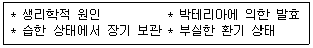
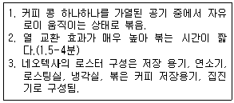
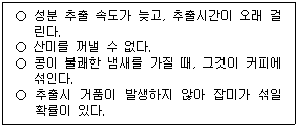
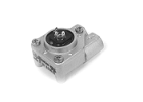

바리스타-2급 (2006-06-03 기출문제)
1과목: 커피학 개론
1. 커피 생두의 신선도와 보관성을 높이기 위해 요구되는 보관 창고의 적절한 환경은?
- 생두의 햇볕 노출을 최대화할 수 있는 시원한 곳이 좋다
- 생두가 건조하지 않도록 충분한 습기를 보유한 곳이 좋다
- 가능한 한 다습한 곳을 피하고, 상온을 유지한 곳이 좋다
- 생두가 곰팡이와 각종 세균의 번식에 노출되지 않도록 직사광선이 많은 곳이 좋다
(정답률: 86%)

2. 나라는 작지만 세계 9위의 커피 재배국으로서 커피재배의 최적의 조건인 화산암이 잘 발달되어 있다. 대개 습식법을 사용하고, 일반적으로 신맛, 감칠 맛, 향기가 풍부한 와인 맛의 커피가 생산되며, 고급으로 평가되는 커피 원두로는 산마르코스 드 타라수(San Marcos Tarrazu)를 꼽을 수 있다. 특히 로부스타 품종의 재배가 법적으로 금지된 곳이기도 한 나라 이름은?
- 코스타리카
- 멕시코
- 칠레
- 자바
(정답률: 78%)
3. 다량의 커피 섭취시, 커피의 폴리페놀 성분은 어떤 무기질의 체내 섭취에 영향을 미치나?
- 셀레늄
- 철분
- 인
- 마그네슘
(정답률: 73%)
4. 우유를 약간 데워주면서 교반시키면 거품이 일어난다. 이와 관련된 현상 중에서 맞게 설명한 것은?
- 우유를 데워주면 우유의 표면 장력이 높아진다.
- 탈지유는 전유보다 거품이 더 잘 일어난다.
- 우유 단백질의 일종인 카제인은 거품의 형성을 용이하게 한다
- 우유는 순수한 물보다 표면장력이 높다..
(정답률: 62%)
5. 그라인더에 적절한 굵기의 커피를 분쇄하여 배출레버의 동작에 의해 일정한 양의 커피가 배출 되도록 하는 일련의 행위를 무엇이라 하는가?
- Grinding
- Cupping
- Packaging
- Dosing
(정답률: 59%)
6. SCAA에서 사용하고 있는 생두 등급 분류 기준이 아닌 것은?
- Cup Quality
- 결점생두의 수
- 생두의 크기
- 생두의 무게
(정답률: 61%)
7. 커피 산패에 대한 설명 중 바른 것은?
- 커피가 공기 중에 산소와 결합하여 맛과 향이 변화하는 것을 말한다
- 산패를 막기 위해 원두를 냉장고에 보관하고, 분쇄 후 즉시 추출하는 것이 좋다
- 강배전된 원두는 약배전된 원두보다 서서히 산화된다
- 멜라노이딘이 형성되면서 진행되는 과정이다
(정답률: 84%)
8. Filter Holder의 두께를 두껍게 하는 이유는 무엇인가?
- 크레마를 많이 만들기 위해
- 쓴 맛을 제거하기 위해
- 온도를 유지하기 위해
- 파손 되는 것을 방지하기 위해
(정답률: 66%)
9. 산패가 가장 빨리 일어나는 지방산은 어느 것인가?
- 라우르산
- 리놀레산
- 스테아르산
- 올레산
(정답률: 71%)
10. 커피콩을 배전하면 당의 갈변화(caramelization)가 일어나 향기 성분이 생성된다. 다음 향기 중에서 배전도가 가장 높은 단계에서 생성되는 향기는?
- 볶은 곡류 향기(malty)
- 물엿 향기(syrup-type)
- 캔디 향(candy-type)
- 초콜릿 향기(chocolate-type)
(정답률: 71%)
11. 「new grown up」 커피콩에 대한 설명 중에 옳은 것은?
- 성장이 빠르고 병충해에 강한 커피콩을 말한다
- 잘 건조되어 생두 색이 엷으며, 안정적 맛을 가진다
- 당해에 수확한 생두로서 수분이 많고, 짙은 녹색을 띈다
- 낮은 지대에서 생산되며, 맛과 향미가 떨어지는 원두이다
(정답률: 68%)
12. 우유를 거품 내는데 사용하는 시판 우유의 포장 용기에 세균수 기준 ‘1급 A'우유의 품질 기준(세균수/ml)에 적합한 것은?
- 3만 미만
- 3만-10만 미만
- 10만-25만 미만
- 25만-50만 미만
(정답률: 59%)
13. 커피 체리에서 생두를 분리하는 방법(natural, washed) 중에서 washed법에서만 사용되는 공정은?
- 발효
- 선별
- 탈곡
- 건조
(정답률: 72%)
14. 일과업무 시작 전에 Coffee 전문점에서 판매 가능한 양만큼 준비해 두는 각종재료를 무엇이라고 하는가?
- Coffee Stock
- Par Stock
- Pre Product
- Ordering Product
(정답률: 56%)
15. 결점두 중에서 아래의 원인에 의하여 생성되는 것은?

- White Beans
- Immature Beans
- Parchment Beans
- Malformed Beans
(정답률: 39%)
16. 다음 중 커피가 인체에 미치는 영향이 아닌 것은?
- 중추신경계를 자극하여 정신을 맑게 한다.
- 위를 자극하여 위액의 분비를 촉진시킨다.
- 이뇨제의 역할을 하여 소변의 양을 증가시킨다.
- 심장 박동수를 감소시켜 진정의 효과를 나타낸다.
(정답률: 81%)
17. 에스프레소 커피를 이용하여 만들어진 메뉴이다. 이때 데미타세잔에 제공될 수 없는 커피메뉴는 무엇인가?
- 카페 리스트레또(Caffe Ristretto)
- 카페 라떼(caffe Latte)
- 카페 콘 파나(caffe con Panna)
- 카페 마키야토(caffe Macchiato)
(정답률: 65%)
18. 다음 중 에스프레소와 가장 비슷한 추출 기구는?
- 사이폰
- 모카포트
- 프렌치 프레스
- 융 드립
(정답률: 49%)
19. 크림의 우모현상(feathering of cream)이란 뜨거운 커피에 커피크림을 첨가하면 커피의 표면에 작은 형태의 털 조각이 떠다니는 같은 응고현상이 일어나는 것을 말한다. 이 현상을 일으키는 우유 중의 성분은?
- 지질
- 유청 단백질
- 무기질
- 유당
(정답률: 38%)
20. 커피에 관한 내용 중 바르게 설명된 것은?
- 커피나무는 꼭두서닛과(rubiaceae)과에 속하는 상록수로, 남아메리카 브라질이 원산지이다.
- 커피 열매는 길이 15~18mm의 되는 타원형으로 파치먼트라고 불린다.
- 아라비카종은 평균 3%, 로부스타종은 약 1%의 카페인을 함유하고 있다.
- 아라비카종의 경우 연평균 강우량 1,500~2,000mm의 규칙적인 비와 충분한 햇볕을 받아야 한다.
(정답률: 73%)
21. Parchment coffee에 대한 올바른 설명은?
- 커피 과실에서 외피와 과육을 제거한 상태를 말한다.
- 커피 생콩에 점질물 성분이 남아있는 상태를 말한다.
- 건조까지 마치고 탈곡기에서 마쇄(磨碎)하여 얻어진 생콩의 상태를 말한다.
- 발효 종료 후, 수세(水洗)하여 내과피(內果皮)가 남아있는 상태를 말한다.
(정답률: 47%)
22. 커피와 관련하여 ‘핸드 피크(hand pick)'은 무엇을 말하는가?
- 손을 이용하여 생두의 크기를 측정하는 작업
- 생두에 포함된 결점두를 제거하는 작업
- 생두의 센터 컷의 상태를 조사하는 작업
- 생두에서 나타나는 이상취를 제거하는 작업
(정답률: 64%)
23. 바리스타는 커피와 같은 식음료의 품질관리 차원에서 HACCP제도에 대한 지식이 갖추어져야 한다, 이 제도에 대한 설명으로 옳은 것은?
- 유해한 미생물이 손, 기구, 용기 등에 전이되는 정도를 분석하는 제도
- 식품과 음료를 대상으로 대장균이 증식하는 정도를 측정하는 제도
- 소비자들에게 공중보건상 건강을 해칠 수 있는 요인들을 공지하는 제도
- 식품의 위해요소를 미리 확인․예방함으로써 식품의 안전성을 관리하는 위생제도
(정답률: 78%)
24. 우리나라에서 일반적으로 볼 수 있는 커피콩의 표피를 감싸고 있는 얇은 껍질은?
- 내과피(Parchment)
- 외피(Outer skin)
- 과육(Pulp)
- 은피(Silver skin)
(정답률: 68%)
25. 레스토랑에서 커피를 서비스할 때 서비스담당자는 고객의 어느쪽에 서서 서비스해야 하나?
- 앞쪽
- 오른쪽
- 왼쪽
- 어느 쪽이든 상관없음
(정답률: 64%)
26. 다음 중 커피의 어원이 된 아랍어는?
- qahwah
- kisher
- cova
- chaube
(정답률: 75%)
27. Screen#18에 해당하는 커피 생두의 크기는?
- 5.56mm
- 5.95mm
- 7.14mm
- 7.95mm
(정답률: 68%)
28. 커피생콩에 함유된 trigonelline에 대하여 잘못 설명한 것은?
- Caffeine의 약 25%의 쓴맛을 나타내는 성분이다.
- 아라비카종에서는 로부스타종 및 리베리아종에 비하여 비교적 많이 함유되어 있다.
- 커피 생콩의 배전(焙煎)과정에서도 거의 열 분해되지 않고 남아있다.
- 커피뿐만 아니라 어패류 및 홍조류 등에서도 다량 함유되어 있다.
(정답률: 42%)
29. 커피의 향기 성분 중에서는 커피 콩이 성장하는 동안 효소의 작용에 의하여 생성되는 것으로서 갓 볶은 커피에서 자주 느낄 수 있는 향기가 있다. 아래 향기중에서 효소에 의하여 생성된 향기가 아닌 것은?
- 꽃 향기(floral)
- 고소한 향기(nutty)
- 허브 향기(herby)
- 감귤 향기(citrus-like)
(정답률: 51%)
30. 커피생두에 대한 설명 중 틀린 것은?
- 생두(Green bean)는 고지대에서 재배될수록 신맛과 향이 뛰어나다
- 저지대 재배지역은 대량으로 기계적 수확이 가능하다.
- 일반적으로 아라비카종자는 저지대, 로부스타종은 고지대에서 재배된다.
- 화산지역의 토양은 미네랄이 풍부하여 커피나무 성장에 도움을 준다.
(정답률: 67%)
2과목: 로스팅과 향미 평가(커피 배전)
31. 생두 배전시 맛 성분의 변화에 대한 설명 중 옳지 않은 것은?
- 생두의 당분, 유기산, 카페인, 무기질 등이 화학반응 하여 신맛, 단맛, 쓴맛, 떫은 맛 등을 생성한다.
- 맛 성분은 주로 가용성으로 끓는 물에서 약 18~22% 추출된다.
- 아라비카종은 유기산이 많아 신맛이 강하다.
- 아라비카종이 로부스타종보다 쓴맛이 강하다.
(정답률: 65%)
32. 아래의 설명에 해당하는 로스터는?

- 유동층 로스터
- 고밀도 로스터
- 드럼 로스터
- ‘프리시전(Precision)'
(정답률: 40%)
33. 다음 배전 중의 맛 성분의 변화에 대한 설명 중 옳은 것은?
- 로부스타종은 유기산이 많아서 신맛이 강하다.
- 단맛은 아라비카종이 로부스타종보다 강하다.
- 신맛은 카페인, 트리고넬린, 퀴닉산 등의 유기산에 기인하다.
- 쓴 맛은 라이트~시나몬일 때 가장 강하다.
(정답률: 49%)
34. 커피생콩에 함유된 탄수화물은 유리당류와 다당류로 나누어진다. 이들에 대하여 바르게 설명한 것은?
- 커피생콩의 유리당류는 배전커피의 갈색이나 향기의 형성에 크게 영향을 미친다.
- 커피생콩의 유리당류에 속하는 주성분은 glucose 이다.
- 커피생콩의 유리당류의 함량은 로부스타종에서 아라비카종 보다 많이 함유되어 있다.
- 커피생콩의 유리당류의 함량은 배전 후에도 거의 감소되지 않는다.
(정답률: 39%)
35. 아라비카종 커피의 생콩에 비하여 배전콩의 성분함량의 감소가 매우 큰 성분들만으로 짝지은 성분은?
- 조섬유, 자당, 순수단백질, chlorogenic acid류
- 자당, 순수단백질, chlorogenic acid, trigonelline
- 자당, 조단백질, caffeine, trigonelline,
- 환원당, 조단백질, chlorogenic acid, caffeine
(정답률: 57%)
36. 배전과정 중 생콩의 수분함량에 따라 배전과정 중 배전조건을 조절하는 것이 매우 중요하다. 제어하여야 할 중요한 조건이 아닌 것은?
- 배전온도(열풍온도)와 시간
- 열풍온도와 콩의 표면온도
- 열원의 종류와 가열방법
- 열의 조사 및 전열방법
(정답률: 32%)
37. 커피의 산미(酸味)를 나타내는 배전콩의 非phenolic carbonic acid를 대표하는 5종의 성분을 바르게 정리한 것은?
- citric acid, malic acid, lactic acid, pyruvic acid, acetic acid
- maleic acid, malic acid, lactic acid, pyruvic acid, acetic acid
- citric acid, tartaric acid, oxalic acid, pyruvic acid, acetic acid
- citric acid, malic acid, lactic acid, glutaric acid, fumaric acid
(정답률: 44%)
38. 커피 콩은 로스팅 시간과 난이도에 따라 조직이 부드럽고 수분이 적어 로스팅이 잘되는 A그룹, 커피 콩이 일반적으로 두껍고 성숙도와 수분함량이 균일하지않아 로스팅에 주의해야 하는 B그룹, 대부분 고산지대에서 재배하여 크고 조직이 단단하여 로스팅 시간이 길고, 향미가 풍부한 C그룹으로 분류할 수 있다. 다음 중 그룹별 분류에 따라 커피 콩이 바르게 짝지어진 것은?
- A그룹-예멘 마타리 NO 9, 케냐 AA
- C그룹-하와이 코나 NO 1, 콜롬비아 Supremo
- B그룹-코스타리카 SHB, 멕시코 알도라
- A그룹-브라질 산투스 NO 1, 탄자니아 AA
(정답률: 52%)
39. 로스팅에 대한 설명중 틀린것은?
- 로스팅을 하기전 로스팅머신은 강한 화력으로 빨리 예열시켜야 한다.
- 로스팅전 생두의 수분함량,조밀도,수확년수,가공방법등을 점검한다.
- 로스팅머신의 특징에 맞게 투입하는 생두량을 조절한다.
- 로스팅하기 전 Roasting Point를 결정한다.
(정답률: 62%)
40. 일반적인 에스프레소 머신에서 중강볶음의 커피를 대상으로 설정하는 물의 온도가 92℃라면, 다음 예문에서 추출물 온도의 적절한 조절 원칙은?
- 중강볶음보다 약하게 볶아진 커피라면 일반적으로는 온도를 약간 높게 설정해 주는 것이 좋다.
- 중강볶음보다 약하게 볶아진 커피라면 일반적으로는 온도도 약간 낮게 설정해 주는 것이 좋다.
- 중강볶음보다 강하게 볶아진 커피라면 일반적으로는 온도도 약간 높게 설정해 주는 것이 좋다.
- 에스프레소 추출은 볶음도에 상관없이 일정한 온도로 설정해야 된다.
(정답률: 50%)
41. 댐퍼의 역할과 관계없는 것은?
- 은피를 배출하는 역할
- 드럼내부의 열량을 조절 하는 역할
- 드럼내부의 공기 흐름을 조절 하는 역할
- 흡열과 발열 반응을 조절하는 역할
(정답률: 61%)
42. 다음은 커피의 쓴 맛(고미)성분에 대한 설명이다. 틀린 내용은?
- 생두를 배전하면 새로운 고미성분이 생성된다.
- 카페인은 커피 쓴 맛의 1/10을 넘지 않는다.
- 디카페인 커피는 쓴 맛을 나타내지 않는다.
- 카페인은 커피에 쓴 맛을 부여한다.
(정답률: 75%)
43. 볶은 커피콩에서 느낄 수 있는 향기는 생콩에 있던 향기와, 주로 중약볶음의 커피에서 만나게 되는 당의 갈변 반응에 의해서 생성되는 향기, 강볶음으로 진행되면서 나타나는 건열반응에 의해서 생성되는 향기로 분류할 수 있다. 다음향기들 가운데 생콩에는 없던 향기는?
- 캐러멜 향
- 꽃향기
- 베리향기
- 허브향기
(정답률: 68%)
44. 볶은 콩에서 가장 많이 발생하는 가스의 주성분은?
- 탄산가스
- 질소가스
- 산소
- 일산화탄소
(정답률: 73%)
45. 다음 중 에스프레소 추출을 위한 로스팅 단계는?
- 시나몬 로스팅
- 미디엄 로스팅
- 이탈리안 로스팅
- 하이 로스팅
(정답률: 58%)
3과목: 커피 추출
46. 에스프레소 추출 시 물 양을 감지해 주는 부분은 어느 것인가?
- 압력 스위치
- 온도 센서
- 플로우 메타
- 전자 밸브
(정답률: 59%)
47. 커피가루의 팽창이 원활하여 뜸 들이는 효과를 충분히 얻을 수 있고, 추출 시간을 마음대로 조절할 수 있는 드립 방법 중에 바디감이 좋아 중량감 있는 커피를 추출 할 수 있는 드립 방식은?
- 메리타
- 카리타
- 고노
- 융
(정답률: 54%)
48. 에스프레소 필터 바스켓의 깊이와 추출에 관한 설명 중 옳은 것은?
- 필터 바스켓의 깊이는 맛에 영향을 미치지 않는다.
- 필터 바스켓은 깊이가 깊을수록 정확한 작업이 쉽고, 사용하는 커피의 양에 적절한 좋은 맛을 내기도 쉽다.
- 필터 바스켓은 깊이가 깊을수록 정확한 작업은 쉽지만, 사용하는 커피의 양과 비례하여 좋은 맛을 내기는 어렵다.
- 필터 바스켓의 깊이가 깊으면 정확한 작업이 어려우며, 사용하는 커피의 양과 비례하여 좋은 맛을 내기도 어렵다.
(정답률: 45%)
49. 커피를 4시간~12시간에 걸쳐 장시간 추출하는 방법으로서 향기를 커피에 그대로 담아 둘 수 있고, 부드러운 맛이 특징이며, 다른 추출법에 비해 물의 맛이 중요하게 작용하는 추출방식은?
- 모카포트
- 프렌치 프레스
- 이브릭
- 워터드립
(정답률: 65%)
50. 에스프레소 추출시 너무 진한 크레마(Dark Crema)가 추출되었다. 다음 중 원인 될 수 없는 것은?
- 물의 온도가 95℃보다 높은 경우
- 펌프압력이 기준압력보다 낮은 경우
- 포터필터의 구멍이 너무 큰 경우
- 물 공급이 제대로 안되는 경우
(정답률: 44%)
51. 드립식 커피추출에서 커피에 수분과 열을 줌으로써 커피조직의 팽창을 유도하여 커피에 함유된 성분의 추출이 용이하도록 하는 작업을 무엇이라 하나?
- 엑기스 추출
- 뜸 들이기
- 스프링 주입
- 추출
(정답률: 65%)
52. 에스프레소 추출시 펌프모터에서 심한 소음이 일어나는 원인은 무엇인가?
- 커피 투입량이 많을 때
- 물 공급이 되지 않을 때
- 온도가 낮을 때
- 추출 시간이 길 때
(정답률: 74%)
53. 추출한 커피에 대한 커핑(Cupping)을 할 때 알아두어야 할 용어에 대한 설명중 틀린 것은?
- Taste - 혀로 느낄 수 있는 커피의 단맛, 신맛 및 쓴 맛
- Aroma - 후각으로 느낄 수 있는 커피에서 증발되는 냄새
- Flavor - 입안에 커피를 머금었을 때 후각과 입속에 느껴지는 맛과 향
- Aftertaste - 커피가 입안에 있을 때 지속적으로 느낄 수 있는 커피의 감도는 맛
(정답률: 57%)
54. 다음은 여러 가지 추출방법 중 단점을 설명한 것이다. 어떤 추출방식의 단점을 말하는 것인가?

- 사이폰
- 이브릭
- 융드립
- 워터드립
(정답률: 44%)
55. 커피생콩의 무기질 성분 중 추출과정에서 99%가 추출되어 인스턴트커피에 이행되기 때문에 추출률의 판정에 이용되는 무기질 성분은 다음 중 어느 것인가?
- Mg
- Ca
- Na
- K
(정답률: 60%)
56. 가동 중인 기계의 Filter Holder 보관 방법 중 적당한 것은?
- 그룹에 장착한 상태로 보관 한다.
- 기계위에 올려놓는다.
- 컵 받침대에 그냥 둔다.
- 깨끗한 테이블 위에 올려놓는다.
(정답률: 72%)
57. 맛좋은 레귤러커피를 마시기 위한 적절한 요령이라고 볼 수 없는 것은?
- 한 번에 매입하는 양은 되도록 적게 한다.
- 즉시 사용하지 않는 커피는 냉장고에 보관한다.
- 커피를 뽑기 직전에 분쇄한다.
- 뽑은 커피는 약한 불에 데워 따뜻하게 유지한다.
(정답률: 60%)
58. 다음 카페인에 관한 설명 중 틀린 것은?
- 아이스 커피를 만들 때 뜨거운 커피에 얼음을 넣어 냉각시키면 백탁현상이 일어나는데 이것은 저온에서 잘 녹지않은 카페인과 클로로겐산의 복합체가 응집,석출하기 때문이다.
- 커피의 백탁현상을 방지하고 카페인과 클로로겐산의 복합체의 응집을 피하기 위하여 얼음에 뜨거운 커피를 넣어 냉각시킨다.
- 카페인은 융점이 섭씨 238도이며, 물에 잘 녹는다.
- 카페인은 낮은 온도에서 잘 녹으며 커피의 쓴맛을 나타낸다.
(정답률: 50%)
59. 다음 중 에스프레소 평가 기준으로 옳은 것은?
- 적절한 커피의 양, 크레마의 두께와 지속성, 크레마의 색깔, 향기의 질과 강약, 맛의 균형감
- 적절한 커피의 양, 전체의 1/3 이상의 크레마, 크레마의 색깔, 향기의 질과 강약, 맛의 강렬함
- 적절한 커피의 양, 전체의 1/3 이상의 크레마, 크레마의 색깔, 톡 쏘는 강한 향기, 맛의 균형감
- 적절한 커피의 양, 크레마의 두께와 지속성, 크레마의 색깔, 향기의 질과 강약, 맛의 강렬함
(정답률: 65%)
60. 아래의 사진은 에스프레소 기계의 “플로우 센서 (Flow Sensor)”이다. 이 부품에 불량이 발생되어 내부 회전체(Turbine wheel)가 작동하지 않을 때 나타나는 현상은 무엇인가?

- 그룹헤드에 찬물이 배출되게 된다.
- 커피기계의 전원이 들어오지 않는다.
- 커피 추출압력이 형성되지 않는다.
- 커피추출 물량의 조절이 되지 않는다.
(정답률: 49%)